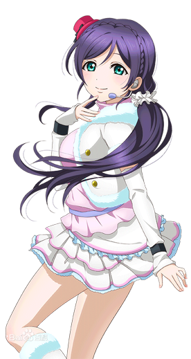
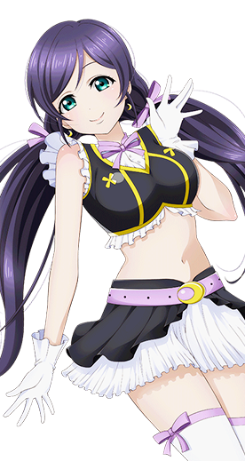
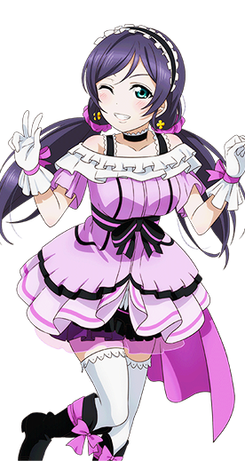
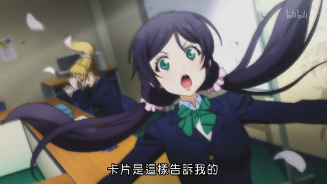

东条 希
———Nozomi Tojo———
| 中文名 | 东条 希 | 就读学校 | 音乃木坂学院 |
| 外文名 | 東條 希 （とうじょう のぞみ） |
年 级 | 高中3年级（已毕业） |
| 别 称 | 小希、希ちゃん、 希魔王、卡牌希 |
所属团体 | μ's、Lily White |
| 配 音 | 楠田亚衣奈 | 擅长科目 | 英语、数学 |
| 生 日 | 6月9日（双子座） | 擅长料理 | 乌冬面 |
| 年 龄 | 17岁 | 儿时梦想 | 圣诞老人 |
| 性 别 | 女 | 属 性 | 人妻、元气（原设） |
| 身 高 | 159cm | 萌点 | 下双马尾、关西腔、 “わしわし龙抓手" |
| 特殊能力 | 占卜 | 魅力点 | 魔力、占卜 |
| 三 围 | B90/W60/H82 | 应援色 | 紫色 |
- 
- 
- 
角色背景
东条希，17岁，高中三年级，原学生会副会长。（现已毕业）
不是出生于关西，却说著关西腔。对照于绚濑绘里我行我素的性格，有着混合着关西腔的独特的说话方式，是有着冷静性格的绘里的好搭档。μ's的名字也是希起的，被绚濑绘里誉为“创造了μ's的女神大人”。持有占卜抽签等绝对不会出现失败结果的超强运，专注于占卜的精神能量。空闲的时候会在神田明神神社担任巫女。因自己所占卜出的塔罗牌结果，决定在旁待望守护μ's，有时则会出言帮助，在μ’s成员遇到困难时施予援手。
相貌衣着
拥有着异常饱满的身材曲线，身材是μ's九人中最好的。拥有一头紫色的长发，用两个粉色头花系成双马尾。
平时在校期间会身着音乃木板学院的校服。胸前系着代表三年级的绿色领结，蓝色西服，裙子是蓝色格子百褶裙，双腿穿长筒袜。在演出时会换上各式各样绚丽的演出服。
性格特点
性格开朗大方，对袭胸有着奇怪的执着，也被认为是全体成员中精神年龄最成熟者。虽然有点吊儿郎当，意外的却是个谋士。偶尔也会流露出自己内心孤独寂寞的一面。
角色生活
喜欢的食物是烤肉，讨厌吃焦糖，平时的兴趣爱好是午睡和占卜（偶尔还会袭别人的胸）
相信着神明的存在，对于超自然力有着强烈的兴趣，因为课后常去神田明神帮忙。父母都属于早出晚归东奔西走的工薪族，所以常常独自一人生活，没什么知己，转到音乃木板学院后结识了好友绘里。 闲暇无事的时候还会去游泳，也因此指导妮可学习游泳。
声优的信
和你最初的相遇是在五年前的6月吧？ 最一开始的时候，连希的事都还不能理解，有着距离感呢。 但是是从什么时候开始的呢？ 因为一直在一起所以没发现，不知不觉间，有希陪伴的人生变得理所当然了。 无法想象如今没有遇到你会变得如何。
Lovelive！给了我和希很多初次尝试的事物。这五年间，非常的快乐和开心。就像奇迹一般。当然也有辛苦的事，但是很幸运能有你在我身边一起跨越。 五年的时间，和你一起并肩走过来我非常自豪。希，你是怎么想的呢？如果和我是一样的心情的话就好了。 在这之后，就算会走上不同的道路，和希一同走过的这段时间，对我来说是十分特别的，是无法取代的。 对希有说不尽的感谢，真的真的谢谢你。 然后，最最最最最最喜欢你了！
和希相遇， 和μ’s的大家相遇， 和希一同度过的时间， 讨厌的事情， 开心的事情， 悲伤的事情， 辛苦的事情， 和希一起看到大家的笑容， 全部，全部都是我的宝物， 重新再说一次，至今为止，真的谢谢你。 然后，今后也请多指教了。